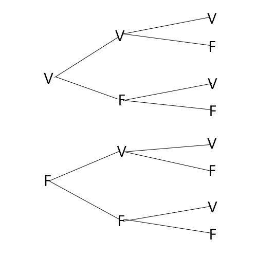

Probabilidades
Probabilidade experiêncial
Nas probabilidades experiênciais temos dois tipos de probabilidades:
Probabilidade experiêncial aleatória;
Probabilidade experiêncial determinista.
Experiência determinista
Experiências deterministas são experiências cujo resultado é conhecido antes de se realizar a experiência. Exemplo:
Atirar uma pedra a um lago e verificar se ela vai cair no fundo do lago. Esta experiência é uma experiência determinista pois já sabemos que a pedra irá cair no fundo do lago.
Experiência aleatória
Experiências aleatórias são experiências cujo resultado, apesar de se econtrar entre um conjunto de resultados conhecidos à partida, não se conhece antes de se realizar a experiência, ainda que as experiências sejam realizadas sob as mesmas condições.
O conjunto de todos os resultados possíveis associados à experiência aleatória que consiste em lançar um dado equilibrado, com as faces numeradas de 1 a 6, e registar o número da face que fica voltada para cima é:
S = {1, 2, 3, 4, 5, 6}
S é o espaço de resultados, conjunto de resultados ou espaço amostral.
Espaço de resultados, S, é o conjunto de todos os resultados possíveis, associados a uma experiência aleatória.
Acontecimentos
Considerando ainda a mesma experiência com o dado e observando se sai um número ímpar, temos:
A: "Sair um número ímpar." ou A = {1, 3, 5}. A ⊂ S. A é um acontecimento.
Acontecimento associado a uma experiência aleatória é qualquer um subconjunto do espaço de resultados.
Acontecimento elementar associado a uma experiência aleatória é todo o acontecimento que consta de um só elemento do espaço de resultados.
Acontecimento certo é aquele que consta de todos os elementos do espaço de resultados. O acontecimento certo verifica-se sempre.
Acontecimento impossível é aquele que não tem qualquer elemento do espaço de resultados. O acontecimento impossível nunca se verifica.
Acontecimentos incompatíveis e acontecimentos contrários
Dados dois acontecimentos A e B contidos num espaço de resultados, S, existe um paralelismo entre as operações de interseção: A∩B, reunião: A∪B e diferença entre A e B: A\B.
Dois acontecimentos A e B de um espaço de resultados, S, dizem-se acontecimentos incompatíveis ou acontecimentos disjuntos se não tiverem elementos comuns. Assim:
A e B são incompatíveis se e só se A∩B=⊘
O acontecimento contrário do acontecimento A representa-se por Ᾱ e é constituído por todos os elementos de S que não pertencem a A. Assim:
A e Ᾱ são contrários se e só se A∪Ᾱ=S e A∩Ᾱ=⊘.
Regra de Laplace
No caso de se tratar de um dado equilibrado e com as faces numeradas de 1 a 6, todos os acontecimentos elementares do espaço de resultados S={1, 2, 3, 4, 5, 6} têm a mesma probabilidade, pelo que é válido o seguinte modelo:
| Acontecimento elementar | {1} | {2} | {3} | {4} | {5} | {6} |
|---|---|---|---|---|---|---|
| Probabilidade | 1/6 | 1/6 | 1/6 | 1/6 | 1/6 | 1/6 |
Da leitura do modelo, podemos concluir que a probabilidade de, num lançamento deste dado, obter face com um número ímpar de pintas é dada por:
P({1, 3, 5}) = 1/6 + 1/6+ 1/6 = 3/6 = 1/2
Em todas as situações em que os acontecimentos elementares são equiprováveis e o espaço de resultados é finito, podemos calcular a probabilidade de um acontecimento usando a definição clássica de probabilidade, ta´bme conhecida como regra ou lei de Laplace.
Se os acontecimentos elementares forem equiprováveis, a probabilidade de um acontecimento A é igual ao quociente entre o número de casos favoráveis à ocurrência do acontecimento A e o número de casos possíveis.
Ou seja:
P(A) = número de casos favoráveis à ocorrência do acontecimento A / número de casos possíveis
Modelos de probabilidade
Definir um modelo de probabilidade consiste em associar a todos os possíveis resultados de uma experiência aleatória a respetiva probabilidade.
-um modelo de probabilidade é, normalmente, definido através de uma tabela.
Por exemplo, vamos considerar a seguinte experiência aleatória:
Lançam-se duas vezes consecutivas um dado equilibrado com as faces numeradas de 1 a 6 e observa-se a soma das pintas obtidas nos dois lançamentos.
Na tabela de dupla entrada seguinte registaram-se todos os casos possíveis:
| + | 1 | 2 | 3 | 4 | 5 | 6 |
| 1 | 2 | 3 | 4 | 5 | 6 | 7 |
| 2 | 3 | 4 | 5 | 6 | 7 | 8 |
| 3 | 4 | 5 | 6 | 7 | 8 | 9 |
| 4 | 5 | 6 | 7 | 8 | 9 | 10 |
| 5 | 6 | 7 | 8 | 9 | 10 | 11 |
| 6 | 7 | 8 | 9 | 10 | 11 | 12 |
Como se verifica, são 36 os casos possíveis. Contando os casos favoráveis a cada um dos possíveis resultados, construiu-se o seguinte modelo de probabilidade:
| Soma das pintas | 2 | 3 | 4 | 5 | 6 | 7 | 8 | 9 | 10 | 11 | 12 |
| Probabilidade | 1/36 | 2/36 | 3/36 | 4/36 | 5/36 | 6/36 | 5/36 | 4/36 | 3/36 | 2/36 | 1/36 |
Variável aleatória. Distribuição de probabilidade
Considera-se a experiência aleatória que consiste em lançar três vezes uma moeda de 1 euro ao ar.
Em diagrama de árvore mostra-se o que pode acontecer.

O espaço de resultados tem oito elementos (23) e é:
S={(VVV), (VVF), (VFV), (VFF), (FVV), (FVF), (FFV), (FFF)}
Considera-se agora a função que tem como domínio S e a cada elemento do domínio faz corresponder, por exemplo, o número de vezes que aparece, F.
A esta função, que representamos por X chama-se variável aleatória.
O contradomínio da função é: {0, 1, 2, 3}.
A variável aleatória X pode tomar quatro valores e escreve-se:
X = 0, X = 1, X = 2, X = 3
Chama-se variável aleatória a toda a função que associa a cada elemento do espaço amostral S um número real.
Considera-se agora a função que a cada valor de X faz corresponder a probabilidade dos acontecimentos associados a esse valor.
Essa função, que se designa por distribuição de probabilidade da variável aleatória X ou função massa de probabilidade da variável aleatória X, é representada pela tabela apresentada ao lado.
Chama-se distribuição de probabilidade de uma variável aleatória discreta X à aplicação que a cada valor xi da variável X faz corresponder a respetiva probabilidade pi.